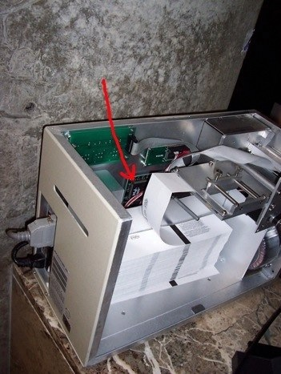
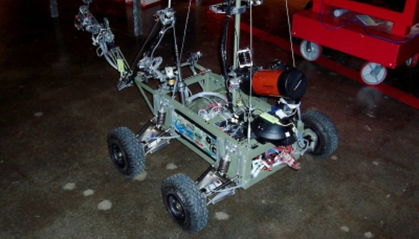

York University champion rover
Saturday, June 13, 2009
When we went to the Ontario Science Centre today, we saw some pretty cool stuff, but the coolest was the York University Rover in action as shown in the above picture. This rover won the 2009 University Rover Challenge in Utah. Each year, universities compete to build a rover that can be used to perform research in extreme environments (e.g. like Mars :-) with a maximum budget of $15,000 (York was the only university in Canada that participated).
The York University rover cost about $12,000 and is a complete redesign of their 2008 model that won 3rd place in 2008 - it runs a 2.6 Linux kernel, has a variety of instruments (including 3 webcams, spectrometer for studying cyanobacteria, and telescope), and has a wicked cool suspension system that allows it to get through pretty much any terrain. Although there is a graphical Java interface that can be used to control it from a Linux laptop, the person who was to bring that laptop today didn’t show up, so they used one of two other Linux laptops to control it using console commands via an ssh (Secure Shell) session, which was even cooler. The only downside is that they chose to use the KDE desktop instead of GNOME on their laptops (I prefer GNOME). But I can’t complain, since talking science and tech with the enthusiastic members of the team for hours is what I like to do (it’s like my undergrad days all over again). I guess you could say that their rover had lots of “Spirit” and “Opportunity”.

We didn’t actually go to the Ontario Science Centre to see the York University rover - it was a nice surprise. Instead, we originally went to see the preview of the new Snakes & Lizards exhibit. To the right is my daughter posing with a non-venomous Green Tree Boa (Corallus caninus).
Another neat bonus of going to the Ontario Science Centre is that many of the inner workings of the place are left open for viewing when things get changed around (e.g. server closets, exhibits, power rooms).

In one of the overflow ticket booth areas, I noticed a ticket machine that had its cover off for repairs (but no repair person in sight) - I couldn’t help but notice that the ticket system ran on the Intel i960 platform - the Intel i960 CPU (see arrow in picture) was a rare RISC CPU that Intel made before buying the ARM brand.
